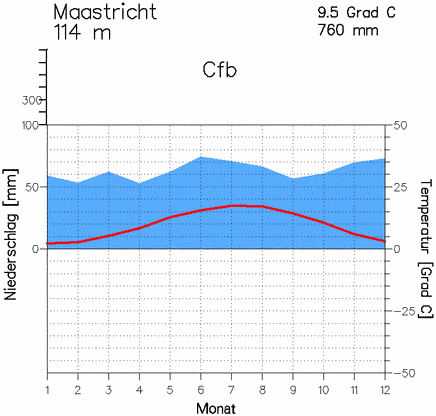

Voor het Gematigd zeeklimaat heb ik Nederland (en nog specifieker Maastricht) gekozen voor het zeeklimaat. Ik heb Nederland gekozen omdat ik daar woon en omdat het een perfect voorbeeld van een gematigd zeeklimaat is. O ja monat = maand en niederschlag = neerslag. De rode lijn zijn de temperaturen en het blauwe de neerslag.
